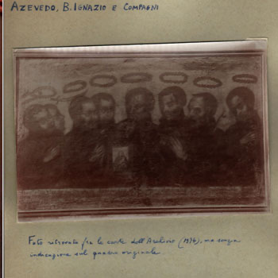

Isusovački blaženici
Svećenik · Misionar · Mučenik
Bl. Diego Luis de San Vitores
1627. – 1672.
Španjolski misionar nakon službe na Filipinima poveo je novu misiju na Marijanskim otocima. Na Guamu je ubijen dok je nastojao služiti tamošnjim stanovnicima.
Tekst je preveden i prilagođen uz pomoć umjetne inteligencije.

Izvor slike
- Spomendan
- 2. travnja
- Zaštitništvo
- Nije navedeno u izvoru
- Životni vijek
- 1627. – 1672.
- Djelovanje
- Misije i evangelizacija · Obrazovanje i poučavanje vjere · Mučeništvo
- Razdoblje
- 17. stoljeće
- Mjesto rođenja
- Burgos, Španjolska
- Svećeničko ređenje
- 23. prosinca 1651.
- Datum smrti
- 2. travnja 1672.
- Mjesto smrti
- Guam
U kalendaru zbirke koristi se dan smrti. Taj datum nije zasebna potvrda liturgijskoga spomendana.
Životopis
Diego Luis de San Vitores rođen je 1627. u plemićkoj obitelji u Burgosu. Nadvladao je roditeljsko protivljenje i 1640. pristupio isusovcima. Studirao je u Alcalái, zaređen je 1651. te poučavao u Oropesi i Madridu. Misijsko odredište dobio je 1659. Na putu prema Filipinima osamnaest je mjeseci propovijedao u Meksiku. U Manili je naučio tagaloški, vodio novake i sveučilišne poslove te djelovao na Luzonu i Mindoru.
Zauzeo se kod Filipa IV. za misiju u Mikroneziji, a nakon kraljeve smrti potporu je pružila kraljica Marijana. Misionari su prihvatili oskudan otočki način života. Curijin životopis navodi trinaest tisuća krštenja u prvih šest mjeseci. Nakon smrti Luisa de Medine na Saipanu rasla je opasnost. San Vitores podnio je mučeništvo na Guamu 2. travnja 1672.
Vatikanski prikaz Calungsodova života potanje opisuje posljednji dan. San Vitores i mladi filipinski katehist Pedro Calungsod došli su u Tomhom radi krštenja djeteta. Protivljenje je hranila glasina da je krsna voda otrovna. Djetetov otac Matapang pozvao je Hiraa i napao pratitelja. Calungsod je mogao pobjeći, ali nije htio ostaviti svećenika. Misionar svojim suradnicima nije dopuštao nositi oružje. Nakon mladićeve smrti ubijen je i San Vitores; njihova tijela bačena su u more.
Ivan Pavao II. pri beatifikaciji 6. listopada 1985. povezao je njegov put s odricanjem od obećavajuće obiteljske budućnosti i spremnošću na daleko poslanje. Papina homilija potvrđuje dolazak misije na Marijane u lipnju 1668. i Guam kao njezino središte. Posebno izdvaja posvećenost duhovnomu i ljudskom dobru stanovnika te molitvu za oproštenje ubojici. Tako njegovu smrt stavlja u cjelinu života koji je započeo mnogo prije posljednjega napada, u odluci da vlastite sposobnosti posveti služenju.
Tekst je preveden i prilagođen uz pomoć umjetne inteligencije.
Pročitaj više na izvornoj stranici ↗